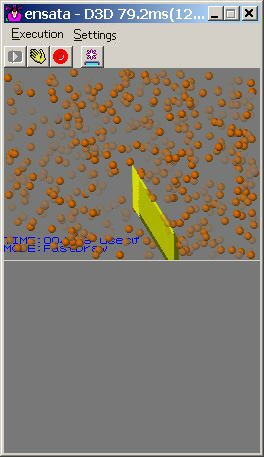

void NNS_G2dDrawSprite( s16 px, s16 py, int pz,
int sx, int sy,
int U0, int V0, int U1, int V1 );
void NNS_G2dDrawSpriteSimple ( const NNSG2dSimpleSprite* pS );
void NNS_G2dDrawSpriteBasic ( const NNSG2dBasicSprite* pB );
void NNS_G2dDrawSpriteExtended( const NNSG2dExtendedSprite* pE );
| Type | Possible Features | Application Example |
| Simple Sprite | Sprite position, rotation around Z-axis, priority, and alpha blend. | Rendering of particles and other items where the texture is the same and only the position and size of the sprite are different. |
| Basic Sprite | All features of Simple Sprite, texture specification, color modulation. | Rendering of standard sprites. |
| Extended Sprite | All features of Basic Sprite, UV value setting, rotation center setting, vertical/horizontal flip. | Rendering of sprites with effects such as UV animation. |
None.
2008/06/20 Updated to include TWL.
2007/11/26 Added description for alpha values.
2004/12/06 Initial version.
CONFIDENTIAL